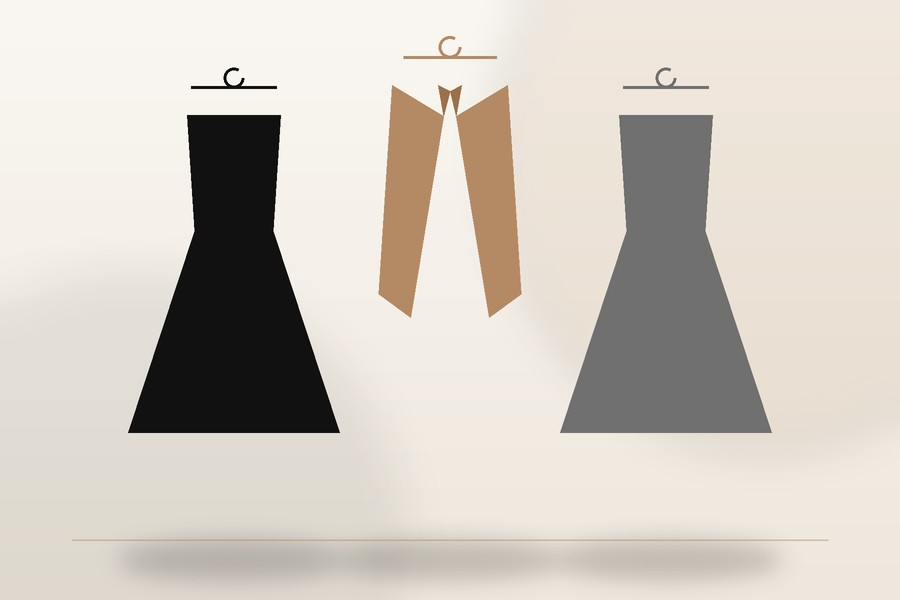
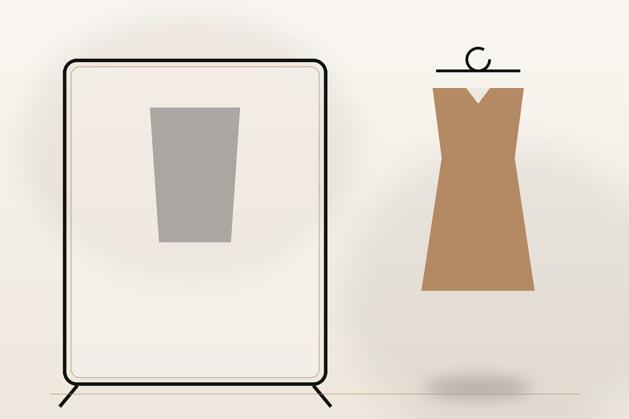
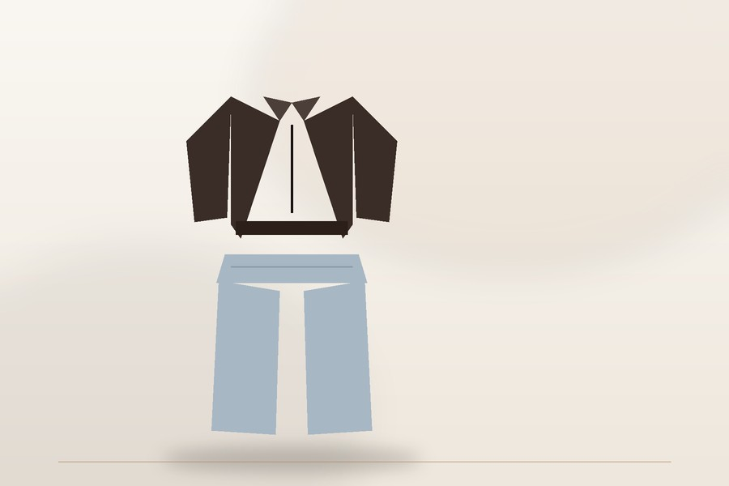
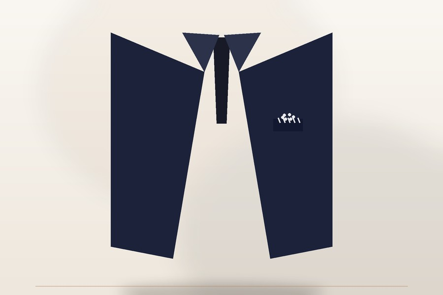

Best Clothing Ideas, for All Events: What to Dress With Self-Assurance

Introduction
Figuring out what to wear for things is really not that hard. When you're getting dressed, the right clothes for a party or a meeting usually start with thinking about where you are going to be and what the party or meeting is for.
I have seen how getting dressed becomes much easier when getting dressed does not try to follow every fashion trend. I found that getting dressed is much better when I put together outfits from items such, as jeans, clean pants, shirts, dresses, comfortable shoes and simple accessories. This way of getting dressed keeps me looking tidy. It also keeps my closet neat and simple. Getting dressed that way does not turn the closet into a mess.
You can wear these outfits for work for dinners or even for parties. This wardrobe guide offers ideas for women to use for all kinds of occasions. I truly feel that the outfit ideas for women in the wardrobe guide are very practical and easy to follow.
What to Wear: How to Pick Out

So if you are going on a coffee date or to an office meeting or to dinner or to a wedding or just out for the weekend the outfit will be different. You should check where you are going, what the weather is, like what time of day it is and whether there is a dress code.
If an outfit looks great but the clothes do not fit you right or the shoes hurt your feet you will probably not feel good about wearing it. I think it is better to pick clothes that fit you well and feel okay, with what you're wearing. This way you can have a wardrobe that you can wear every day. Choosing clothes that fit well and are comfortable is an idea because it makes your life easier. You can just wear what you like. Not have to worry about how you feel in it.
Simple Outfit Ideas for Style

It is much better to do this by going out and buying clothes every single time you want to try a new look. Most fashion styling advice will say that having clothes is the way to create many different outfits.
To get dressed every day start with something you really like. Add things to that. If you wear jeans with a T‑shirt and sneakers you will look very casual. If you take off the T‑shirt and put on a blouse and wear loafers or sneakers the same jeans will look nicer and more stylish. Straight‑leg or wide‑leg jeans, with a top.
- Jeans provide a feel. Blazer adds a touch of formality. Basic T‑shirt keeps things
- Fitted knit tops and neutral trousers combine warmth with simplicity.
- Handbag carries all the essentials. Simple accessories keep the style clean.
- Trousers with a tailored fit feel like a perfect pair. Shirt fits the body right.
What to Wear for Different Occasions is my guide

Adding accessories will make sure your outfit is just right. This is true, for any occasion. It is important to have clothing that fits the situation. Whether you need clothing or professional clothing or formal clothing accessories can help complete the look.
You do not need a different set of clothes for every single event. A flexible blazer, a dress, well-fitted pants, plain shoes and a few small items can be put together in many different ways. Fashion magazines, like Vogue's Outfit Formulas also show how to use to-change outfits as a helpful way to fix the daily problem of not knowing what to wear.
Beach casual dressing
Adding something like sunglasses, to your outfit is also an idea. This makes your outfit look cool. You can add a lot of things to your outfit like a belt or a nice pair of shoes and that makes your clothes look like you really thought about what you are wearing.
The Best Work Outfits
For a neat and tidy look you should choose colors that match each other and pick clothes that are simple and clean. A blazer is very helpful for work outfits because it can make a basic set of clothes look formal and you don't have to add items to the work outfit.
What to wear to dinner or on a night out
Dinner and evening occasions are a time to try out new things with the stuff you wear. You can use accessories and textures and wear slightly nicer clothes. A midi dress is an idea or you can wear a nice blouse with some trousers or a skirt with a top that fits well. This can make a difference and make your simple clothes feel more suitable for dinner and evening occasions, like dinner.
Fashion QD Style Guide
If you want ideas for what to wear after you pick out your clothes you should look at the You should check out the Fashion section on Fashion QD. They have a lot of Fashion ideas that can truly help you.
FAQ's
What do I wear if I have no clue what to wear?
The memories of the event, how it was and how the weather was on that day keeps coming to me again and again. I recall the lights and the cool breeze of the event.
What kind of outfit can I put on daily and comfortably?
To get a look you can. Match items. For example you can take jeans or trousers. Pair them with a neat top. Then you can put on shoes to complete the outfit. Jeans, with a top and shoes are a choice.
What should my working attire be?
I enjoy wearing clothing which I can wear while working, such as trousers and blouses. Clothes really do feel good when working. I could also wear midi dresses while working.
How can you make a basic outfit look fashionable?
A belt can totally change the way you look. This can also be a statement bag that you carry around.
What should I wear to dinner?
I think a midi dress is a choice. It looks nice. An elegant blouse, with trousers is also an option.. You can wear a skirt and top that is polished and neat.
Conclusion
Knowing what to wear gets a lot simpler when you stop trying to make a new look each time. Begin with clothing items that go with lots of things and change them based on the event you're going to, the weather you're facing, how comfortable you want to be and the way you like to look.
I really think that the best outfit ideas are the ones that are easy to put on. You can take a pair of trousers, a shirt, a blazer, comfortable shoes and accessories that are chosen carefully to make different outfits. These outfits work well for work days for dinners and for events.
I think fashion is very important because fashion should make me feel good about myself. I do not want fashion to make me feel stressed out. I need to have clothes that fit the way I live my life. I will try putting on my clothes to see what works for me. I can even make changes to the clothes I already have so those clothes feel new and special.